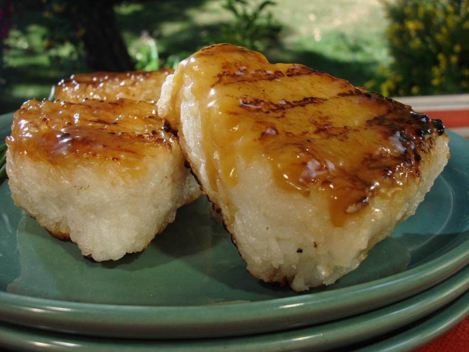

Grilled Rice Balls

Ingredients
- 1 cup short-grain sushi rice
- 1 teaspoon kosher salt
- 2 tablespoons soy sauce
- 2 tablespoons mirin
- 1/4 cup butter, cut into small pieces
- Chopped chives, for garnish
Directions:
- For this recipe it's important that you use Japanese short-grain white rice, also sometimes called
sushi rice. Brown rice and long-grain rice will not work. Cook the rice according to the package
directions along with the salt. While the rice is cooking bring the soy sauce and mirin to a boil
over low heat until it's reduced by about half. Take it off the heat and whisk in the butter.
- When the rice is done and cooled down just a bit (it should still be hot), cut off a square piece
of plastic wrap and pile 1/4 of the cooked rice in the center. Wrap the plastic around it and use
your hands to press it together into 1-inch thick triangle. Make sure they are densely packed
together so they won't fall apart on the grill. Repeat with the remaining rice and plastic wrap.
- Preheat the grill to medium.
- Use a pastry brush to baste 1 side of the rice balls with the butter mixture and put them on the
grill, buttered side down. Let them grill until browned and crisp on 1 side, about 5 minutes) then
brush the tops of the rice balls with the butter mixture. Flip them over using tongs and grill
until the second side is crisp. Transfer the rice balls to a serving platter. Brush again with
the butter mixture and garnish with chives.
GO BACK